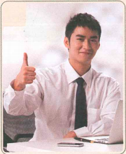
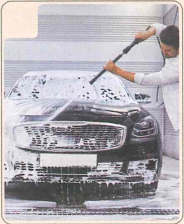
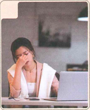
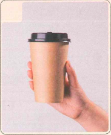
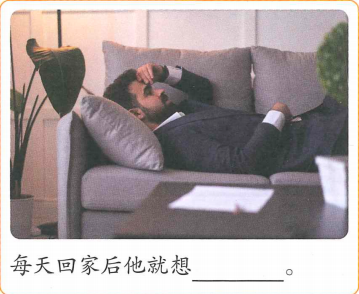
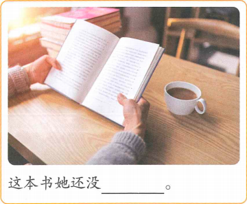
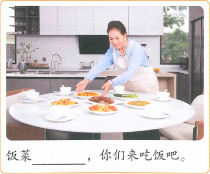

我想去西安旅游
Em muốn đi Tây An du lịch
HSK 2 · Bài 3
🔥 Khởi động 1 · Chọn đáp án đúng cho từng hình
给下面的词语选择对应的图片。Mỗi hình có 4 đáp án A–D, học sinh chọn 1 đáp án.




✍️ Khởi động 2 · Thêm danh từ
给下面的动词加上合适的名词。 Hãy thêm danh từ thích hợp cho các động từ sau.
① 送 ________
② 拿 ________
③ 做 ________
④ 吃 ________
⑤ 洗 ________
⑥ 看 ________
📚 Từ vựng 1
Nhấn vào từng từ để xem phân tích chữ Hán, 例句 và 词语搭配 khi có kết hợp tự nhiên.
🎧 Nghe Bài khóa 1
（1）刘明为什么回来晚了？ A 没做完工作 B 去外边吃饭 C 在公司休息
（2）刘明现在要做什么？ A 吃饭 B 喝水 C 工作
💬 Đọc Bài khóa 1
🧠 Ngữ pháp 1 · 结果补语 Bổ ngữ kết quả
Một số động từ hoặc tính từ đặt sau động từ để biểu thị kết quả của hành động.
Phủ định: 没（有） + động từ + bổ ngữ kết quả; bỏ 了 ở cuối câu.
Nghi vấn: V+结果+了吗？ / V+结果+了没有？ / V+没+V+结果？
📚 Từ vựng 2
Nhấn vào từng từ để xem phân tích chữ Hán, 例句 và 词语搭配 khi có kết hợp tự nhiên.
🎧 Nghe Bài khóa 2
（1）刘明想找时间做什么？ A 去吃饭 B 去旅游 C 买东西
（2）刘明让王一雪做什么？ A 去买票 B 看一下时间 C 想想去哪儿玩
💬 Đọc Bài khóa 2
🧠 Ngữ pháp 2 · 动词重叠（1）Động từ lặp lại (1)
Động từ có tính hành động mạnh có thể lặp lại để diễn đạt thời gian ngắn, số lượng ít, thử làm; sắc thái khẩu ngữ nhẹ nhàng.
那你再想一想，你想好了，我来买票。
我有点儿累，现在想休息休息。
你能过来帮帮忙吗？
📚 Từ vựng 3
Nhấn vào từng từ để xem phân tích chữ Hán, 例句 và 词语搭配 khi có kết hợp tự nhiên.
🎧 Nghe Bài khóa 3
（1）刘明让王一雪做什么？ A 洗手 B 洗苹果 C 吃苹果
（2）王一雪想去哪儿旅游？ A 西安 B 北京 C 上海
💬 Đọc Bài khóa 3
🧠 Ngữ pháp 3 · 动词重叠（2）Động từ lặp lại (2)
Khi diễn đạt tình huống đã xảy ra:
Động từ song âm tiết: thường dùng AB了一下
Từ li hợp: A了AB
我看了看网上的介绍。
我休息了一下，现在觉得不累了。
他昨天来帮了帮忙。
📚 Từ vựng 4
Nhấn vào từng từ để xem phân tích chữ Hán, 例句 và 词语搭配 khi có kết hợp tự nhiên.
🎧 Nghe Bài khóa 4
判断正误：
（1）刘明今天没去医院上班。
（2）今天早上是刘明送孩子去学校的。
💬 Đọc Bài khóa 4
✏️ Bài tập tổng hợp · Chọn từ
A 一起 B 送 C 回去 D 拿 E 累
（1）已经下班了，你为什么还不________？
（2）他每天早上都________女朋友去上班。
（3）爸爸________了一些水果给孩子们吃。
（4）A：我昨天晚上没睡好，今天觉得很________。
B：那你休息休息吧。
（5）A：你认识家月吗？
B：认识啊，我们每天________坐公交车来学校。
🖼️ Bài tập tổng hợp · Miêu tả tranh
Mỗi ảnh là một khung riêng.
你吃苹果吗？我去给你________。

每天回家后他就想________。

这本书她还没________。

饭菜________，你们来吃饭吧。
🎭 Hoạt động trên lớp · 双人活动
Hai người một nhóm, hỏi nhau: Có muốn đi du lịch hay không? Muốn đi đâu? Tại sao lựa chọn địa điểm du lịch đó? Cố gắng sử dụng tối đa từ ngữ và điểm ngôn ngữ đã học trong bài.
B：我想去旅游。
A：你想去哪儿旅游？为什么？
B：……
✅ Tổng kết Bài 3
Từ mới
回来、这么、完、一起、出去、洗、自己、拿、手、为什么、不错、送、回去、每、累。
Ngữ pháp
结果补语 · 动词重叠（1）· 动词重叠（2）
Chủ đề
Hỏi nguyên nhân, mô tả kết quả hành động và trao đổi kế hoạch du lịch Tây An.